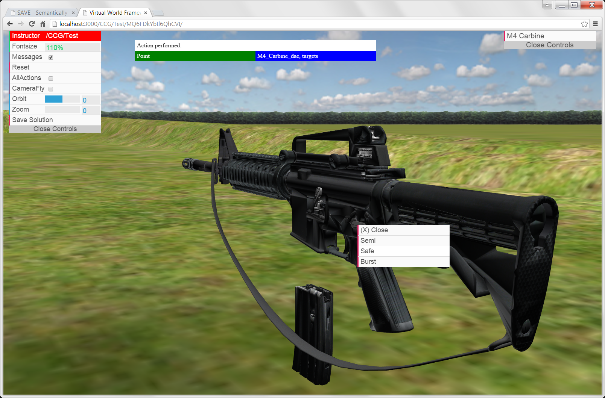

Exercise UI (EUI) - Instructor Mode
The EUI allows you, as the instructor, to record interactions that serve as the basis for a solution, which the student will later be assessed against. Note the EUI in instructor mode has a red bar at the top.
- The EUI for the instructor is launched via the CAT (previous step).
- Hit the Reset button to refresh the assessment engine.
- Load the M4 model by selecting the M4 Carbine button in the upper-right corner.
- Click on the relevant areas of the M4 to initiate actions. A context menu shows the available actions.
- Perform the exercise steps in sequence. Click 'M4 Exercise Steps' above for the correct order.
- If you make a mistake during the exercise, select the Reset button to start over.
- Select the "Save Solution" button when done to write the exercise file to the repository.
Result: the exercise file is written to the exercise repository.
Next, you will refine the solution in the Exercise Solution Editor.